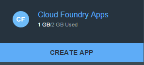
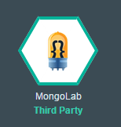
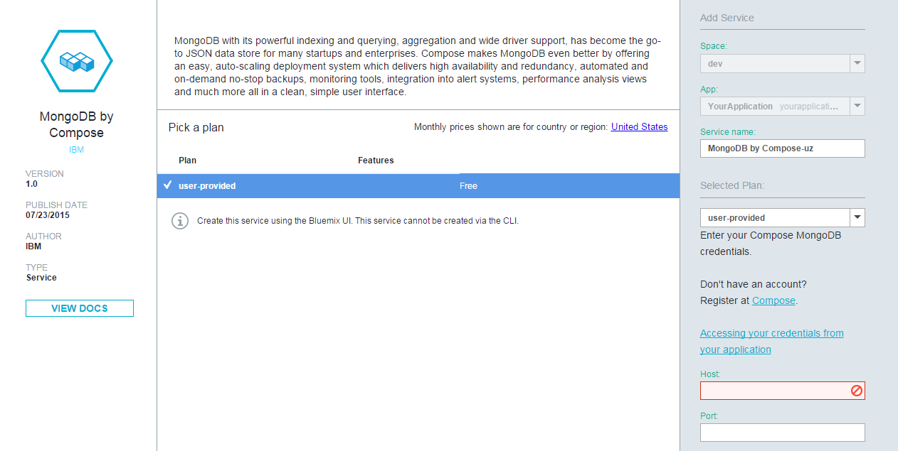
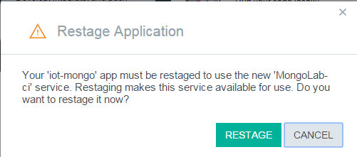
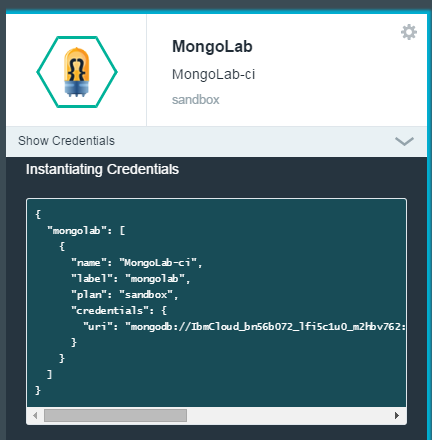

IBM Bluemix MongoDB Storage Lab
Create a Bluemix application with a MongoLab Service
-
Visit The IBM BlueMix Console and create a trial account. You will need to verify your email address before you can login.
-
After logging in, you will be in the DASHBOARD view.
-
Click CREATE APP.

-
For the question, "What kind of app are you creating?" select WEB.
-
For the question, "How do you want to get started?", select the SDK for Node.js option, then click CONTINUE.
-
Name your app and then click FINISH.
-
Once your application has been created by IBM Cloud. Return to the main dashboard by clicking on the Back to Dashboard link. The application that you just named should be listed towards the bottom of the page. Click on it and you will see a screen like
 click ADD A SERVICE OR API.
click ADD A SERVICE OR API.
-
In the "Data & Analytics" section, select MongoDB by Componse.

-
Click Create Accessing your Credentials from your application or USE to confirm the creation of the service.

-
After the service has been created, a popup window requesting to restage your application will appear. Click RESTAGE.

-
Wait for your application to finish staging. A message indicating that "Your app is running" will be displayed when done.
Set up your IBM Cloud development environment
Create a New Project
Name the project anything that you like. For example, IBMCloudApp1
Install the MongoDB NPM Module
Add the MongoDb module to the package.json file like shown below.
./package.json
Create a MongoDB Client
-
Create a folder named
mongodb. -
Change to the directory mongodb and create a javascript file
index.js -
Open index.js file and create a node reference variable for the module and client object for establishing a database connection.
./index.js
Establish a connection with MongoLab Service
The connect function returns a db object, which contains the collection object. The collection object is used to insert and retrieve data from cloud.
-
Obtain the connection url from the Bluemix console.
From your application's dashboard, locate your application name in the left sidebar. Click on your application and then locate the MongoLab service then click Show Credentials.

-
Copy the uri string under mongolab > credentials.

-
Pass the uri to the connect function, api provided by the mongodb node package.
./index.js
Store data in IBM MongoDB
Data can be stored as JSON objects or an array of JSON objects. In this demo, we are storing the sensor data with sensor id, value and timestamp fields.
./index.js
Query Data
Timestamp based query
dataQuery = { "timestamp": { $gt: readQuery.timestamp } };
Sensorid based query
dataQuery = { "sensor_id": { $eq: readQuery.sensor_id } };
Run query
collection = db.collection(self.config.db);
collection.find(dataQuery).toArray( function(err, items) {
if(!err)
console.log(JSON.stringify(items, null, ' '));
});
Additional resources
IBM Cloud documentation - https://www.ng.bluemix.net/docs/
Mongodb npm module - https://www.npmjs.com/package/mongodb
IBM Bluemix IoT starter application to visualize data - https://www.ng.bluemix.net/docs/starters/IoT/iot500.html
IoT Foundation Recipes - https://developer.ibm.com/iotfoundation/
MQTT - http://mqtt.org/
Node-RED - http://nodered.org/